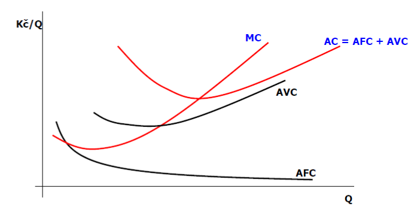

Ekonomie a podniková ekonomika
Obsah
- Obsah
- Tržní mechanismus a jeho fungování
- Chování spotřebitele a formování poptávky
- Chování výrobce a formování nabídky
- Dokonalá konkurence a tržní rovnováha
- Nedokonalá konkurence: monopol, monopson
- Nedokonalá konkurence – Oligopol a Monopolistická konkurence
- Trh výrobních faktorů – trh práce
- Trhy výrobních faktorů – trh kapitálu a trh půdy
- Měření výkonu ekonomiky
- Makroekonomická rovnováha
- Hospodářský cyklus a hospodářský růst
- Trh práce a nezaměstnanost
- Analýza inflace a jejího vlivu na makroekonomickou stabilitu ekonomiky
- Peníze a fungování peněžního trhu
- Monetární politika, fiskální politika
- Mezinárodní obchod a systém měnových kurzů
- Zásobovací činnost podniku
- Finanční řízení podniku, rozhodování a hodnota peněz
- Investiční činnost podniku
- Inovační činnost podniku
Obsah
Mikroekonomie
Tržní mechanismus a jeho fungování (ekonomická vzácnost, výrobní faktory, ekonomický koloběh, náklady obětované příležitosti, hranice produkčních možností, význam a funkce trhu, dosahování tržní rovnováhy, cenová a necenová konkurence, úloha cenového systému).
Chování spotřebitele a formování poptávky (racionální chování spotřebitele, užitek a jeho měření, celkový a mezní užitek – grafické znázornění, rovnováha spotřebitele – grafické vyjádření, poptávka a její elasticita, substituční a důchodový efekt poptávky).
Chování výrobce a formování nabídky (grafické znázornění: nákladové funkce, příjmy a náklady v krátkém a dlouhém období, produkční funkce, celkový, průměrný a mezní produkt, nákladové optimum firmy).
Dokonalá konkurence a tržní rovnováha (charakteristika dokonalé konkurence, rovnováha firmy maximalizující zisk, křivka nabídky – bod uzavření firmy, bod zvratu, krátkodobá a dlouhodobá rovnováha – grafické znázornění, přebytek spotřebitele, přebytek výrobce).
Nedokonalá konkurence: monopol (příčiny existence nedokonalé konkurence, charakteristika tržních struktur: monopol – grafické znázornění, příklad(y), cenová regulace monopolu, analýza přebytků spotřebitele a výrobce v případě monopolu), monopson (vysvětlení pojmu, příklad).
Nedokonalá konkurence: oligopol (příčiny existence nedokonalé konkurence, charakteristika tržních struktur: oligopol s dominantní firmou – grafické znázornění, koluzivní oligopol, příklady oligopolních struktur), monopolistická konkurence (monopolistická konkurence v krátkém a dlouhém období – grafické znázornění).
Trhy výrobních faktorů – trh práce (rovnováha firmy na trhu výrobního faktoru – grafické znázornění, práce jako výrobní faktor, individuální poptávka po práci, individuální nabídka práce, důchodový a substituční efekt nabídky práce, rovnováha na trhu práce – grafické znázornění).
Trhy výrobních faktorů – trh kapitálu a trh půdy (rovnováha firmy na trhu výrobního faktoru – grafické znázornění, pojetí a členění kapitálu, poptávka na trhu kapitálu, nabídka na trhu kapitálu, utváření rovnováhy na trhu kapitálu, trh půdy a jeho specifika).
Makroekonomie
Měření výkonu ekonomiky (domácí a národní produkt, hrubý a čistý produkt, nominální a reálný produkt, metody výpočtu hrubého domácího produktu).
Makroekonomická rovnováha (spotřeba a úspory, investice, model AS-AD: agregátní nabídka – klasická a keynesiánská verze, agregátní poptávka, potenciální produkt, grafické znázornění).
Hospodářský cyklus a hospodářský růst (model AS-AD v dlouhém období – grafické znázornění, produkční mezera, potenciální produkt, fáze a příčiny hospodářských cyklů, důsledky cyklických výkyvů, zdroje hospodářského růstu).
Trh práce a nezaměstnanost (rovnováha na trhu práce – grafické znázornění, nezaměstnaní, ekonomicky aktivní obyvatelstvo, způsoby měření zaměstnanosti a nezaměstnanosti, náklady spojené s nezaměstnaností, efektivnostní mzda).
Analýza inflace a jejího vlivu na makroekonomickou stabilitu ekonomiky (podstata inflace, příčiny inflace – nabídková a poptávková inflace – grafické znázornění, způsoby měření inflace, důsledky inflace, Phillipsova křivka).
Peníze a fungování peněžního trhu (podstata a funkce peněz, vznik peněz, peněžní agregáty, poptávka po penězích a motivy jejich držby, nabídka na trhu peněz – grafické znázornění).
Monetární politika (nástroje monetární politiky, úloha centrální banky, účinnost monetární politiky, vlivy na ekonomickou rovnováhu, monetární politika a její aplikace na podmínky ČR). Fiskální politika (nástroje fiskální politiky, význam, rozpočtová soustava ČR, účinnost fiskální politiky, teoretické přístupy a koncepty, fiskální politika ČR).
Mezinárodní obchod a systém měnových kurzů (význam mezinárodního obchodu, absolutní a komparativní výhody, nástroje zahraničněobchodní politiky, protekcionismus, systémy měnových kurzů, platební bilance a její vertikální a horizontální struktura).
Podniková ekonomika I
Zásobovací činnost podniku (význam zásobovací činnosti, druhy zásob materiálu, metoda řízení zásob JIT, metoda ABC, optimální velikost dodávky).
Finanční řízení podniku (cíle, principy, úloha a funkce finančního řízení, interní a externí zdroje financování podniku), rozhodování a hodnota peněz (časová hodnota peněz, úroková míra, anuita, riziko a jeho diverzifikace).
Investiční činnost podniku (druhy investic, parametry hodnocení investic, postup hodnocení investic, metody investičního rozhodování, diskontování).
Inovační činnost podniku (charakteristika pojmu inovace, invence a imitace, druhy inovací a inovační faktory, kvalitativní a kvantitativní stránka inovačního procesu).
Tržní mechanismus a jeho fungování
ekonomická vzácnost, výrobní faktory, ekonomický koloběh, náklady obětované příležitosti, hranice produkčních možností, význam a funkce trhu, dosahování tržní rovnováhy, cenová a necenová konkurence, úloha cenového systému
Ekonomická vzácnost – hlavní charakteristika ekonomických statků, které jsou na rozdíl od volných statků pro spotřebitele ekonomicky vzácné což vede k ochotě za ně zaplatit.
zdroje jsou omezené (vzácný statek – ropa, vzácný výrobní faktor)
Výrobní faktory – používají se při výrobě ekonomických statků jako vstupy – práce, půda, kapitál (hmotný (stroje, výrobní haly, náčiní), finanční a lidský/znalostní)
Cena výrobních faktorů – mzda, renta, úrok
Náklady obětované příležitosti – implicitní náklady, náklady volby (vybírám mezi dvěma variantami, práce vs. volný čas)
Ekonomický koloběh – trh výrobních faktorů = domácností = trhy statků = firmy
Do ekonomiky vstupují domácnosti a firmy, jsou propojeny trhem výrobních faktorů a trhem statků a služeb
Lze zaznamenat tok reálných věcí (domácnost vstane, vyrobí ve firmě statek, který si někdo jiný koupí) a finančních toků (domácnost zaplatí za výrobek, která společnost zaplatila mzdou)
Model 2x2
Kde je stát? Ten je uprostřed, dává domácnostem transfery a firmám dotace, bere daně a reguluje oba trhy
Hranice produkčních možností (PPF) - kombinace dvou statků, které lze produkovat při plném využití daných zdrojů
Bod A – optimální využití faktorů
Bod B – neefektivní využití (prostoje, zmetek)
Bod C – nelze krátkodobě dosáhnout, dlouhodobě lze inovací/novými výrobními faktory PPF posunout
Trh – místo kde se potkává nabídka s poptávkou
Kdo poptává nebo nabízí? Záleží, jestli je to trh statků a služeb (nabízí firmy, poptávají domácnosti) nebo trh výrobních faktorů (nabízí domácnosti, poptávají firmy)
Funkce trhu – optimální alokace zdrojů (co? Jak? Pro koho?)
Tržní rovnováha – místo, kde se poptává poptávka s nabídkou
Při vyšší ceně klesá poptávané množství (Q_{D}) a roste nabízené množství (Q_{S}) a vzniká přebytek a cena začne klesat
Při nižší ceně roste poptávané množství (Q_{D}) a klesá nabízené množství (Q_{S}) a vzniká nedostatek a cena začne růst
Cenová a necenová konkurence – lze si konkurovat cenou (primárně nižší, ale lze i vyšší u luxusního zboží) anebo něčím jiným (kvalita, reklama, servis)
Úloha cenového systému – informační funkce (informace o pozici produktu na trhu, vztah ke konkurenci), motivační funkce (motivuje k užití statku, podnět k rozhodování), alokační funkce (rozmisťuje zdroje mezi různá užití pro efektivitu)
Chování spotřebitele a formování poptávky
racionální chování spotřebitele, užitek a jeho měření, celkový a mezní užitek – grafické znázornění, rovnováha spotřebitele – grafické vyjádření, poptávka a její elasticita, substituční a důchodový efekt poptávky
Racionální chování spotřebitele a maximalizace užitku (cílem spotřebitele je maximalizace užitku)
Užitek – subjektivní pocit uspokojení ze spotřeby
Kardinalistická teorie – užitek je měřitelný, jsem schopen přiřadit hodnotu
Ordinalistická teorie – užitek lze seřadit od nejvíce po nejméně preferovaný
Kardinalistická teorie
Celkový užitek – kolik mi spotřeba přinese nějakého statku
Mezní užitek – kolik mi přinese každý další jednotka
Zákon klesajícího mezního užitku (každý další už je menší, až dojdu k) bodu nasycení (TU_{MAX}, v tu chvíli MU = 0)
Optimum – MU\ = \ cena (při rovnosti je to nejlepší kombinace)
Ordinalistická teorie
Závěr z indiferenční analýzy – najít linii rozpočtu (BL, spojuje kombinace dvou statků se stejnými náklady na pořízení) a indiferenční křivku (IC, různé kombinace dvou statků se stejnou úrovní užitku)
Pokud je nová IC níže (protíná více), tak dochází k menšímu celkovému užitku; pokud je výše, je kombinace nad rozpočtové možnosti
Poptávka – poptávka je klesající
Cenová elasticita poptávky – poměr procentní změny objemu zboží k procentní změně ceny
Elastická poptávka (elasticita\ > \ 1) - cena o 10 % dolů, množství o 80 % nahoru, vyplatí se slevy
Jednotkově elastická (elasticita\ = \ 1) - vyrovnaná, vzácná
Neelastická (elasticita\ < \ 1) - cena o 50 % nahoru, množství o 10 % dolů, léky / potraviny
Substituční efekt – spotřebitel při zvýšení ceny nahrazuje jinými statky (iPhone / Android)
Důchodový efekt – při zvýšení ceny poptáváme méně původního statku (omezený rozpočet vede na omezení reálného důchodu)
Chování výrobce a formování nabídky
grafické znázornění: nákladové funkce, příjmy a náklady v krátkém a dlouhém období, produkční funkce, celkový, průměrný a mezní produkt, nákladové optimum firmy
Produkční funkce – maximální objem produkce při dané kombinaci faktorů
Řeší jenom množství
Celkový produkt – celkový objem produkce při určitém množství vstupů
Průměrný produkt – objem produkce na jednotku vstupu
Mezní produkt – reálná změna produkce vyvolaná změnou množství (MP\ = \ dTP\ /\ dVF)
Náklady – rozlišujeme krátké období (do 1 roku) nebo dlouhé období
V krátkém období – Celkové náklady (TC) = Variabilní náklady (VC, práce) + Fixní náklady (FC, kapitál)
V dlouhodobém období je vše variabilní
Explicitní náklady (reálně vynaložené náklady) vs implicitní náklady (ušlý příjem z výrobních faktorů)
Celkový příjem (TR) - celková částka, kterou firma získá prodejem svých výrobků (TR\ = \ P\ x\ Q)
Průměrný příjem (AR) - příjem na jednotku produkce (AR\ = \ TR\ /\ Q)
Mezní příjem (MR) - změna celkového příjmu připadající na dodatečně vyrobenou jednotku produkce (MR\ = \ \Delta TR\ /\ \Delta Q)
Celkový produkt (TP) - celkový objem produkce vyrobený určitým množstvím vstupu (výrobního faktoru), měříme ve fyzických jednotkách.
Průměrný produkt – objem produkce připadající na jednotku vstupu (výrobního faktoru) (AP\ = \ TP\ /\ VF)
Mezní produkt – změna objemu vyrobené produkce vyvolaná změnou množství vstupu o jednotku. (MP\ = \ \Delta TP\ /\ \Delta VF)
Náklady v dlouhém období – izokvantová analýza (stejná jako indiferenční analýza)
Vodorovná osa – L, množství práce
Horizontální osa – K, kapitál
Rovná čára – C, izokosta (stejné náklady na pořízení obou výrobních faktorů)
Ohlá čára – Q, izokvanta (veškeré kombinace výrobních faktorů, se kterými je možno vyrobit stejný objem produkce, nejvyšší)
Dokonalá konkurence a tržní rovnováha
charakteristika dokonalé konkurence, rovnováha firmy maximalizující zisk, křivka nabídky – bod uzavření firmy, bod zvratu, krátkodobá a dlouhodobá rovnováha – grafické znázornění, přebytek spotřebitele,přebytek výrobce
Dokonalá konkurence – rovné podmínky pro všechny její účastníky, rovné podmínky, velké množství subjektů, volný vstup do odvětví, dokonalá informovanost, homogenní produkt (nejde odlišit jinak než cenou), výrobní jsou příjemci ceny.
Cena vzniká na trhu, rovnováha firmy maximalizující zisk – MC\ = \ MR
Křivka nabídky – pro každou úroveň ceny existuje rovnovážný objem produkce daný průsečíkem křivek MR a MC. Křivka mezních nákladů (resp. její rostoucí část) je tedy současně křivkou nabídky firmy.
Bod uzavření firmy – firma pokrývá pouze své FC, P\ = \ AVC_{\min}
Bod zvratu – zisk roven nule, P\ = \ AC_{\min}
Krátké vs. dlouhé období:
V krátkém období se nemění počet firem na daném trhu, firmy z trhu neodcházejí a nové firmy na něj nevstupují.
Firma je v plusu, vstoupí nová konkurence dle dokonalé informovanosti a nulových bariér, přichází nová konkurence a cena klesá.
Firma je v mínusu, odcházíme z trhu, klesá nabídka a cena roste
V dlouhém období firmy odcházejí z trhu, mají-li ekonomickou ztrátu. Nové firmy na trh vstupují, dosahuje-li se na něm ekonomického zisku.
Rozlišujeme ekonomický zisk (PI_{E}\ = \ TR\ - \ EC\ –\ IC, náklady obětované příležitosti) a účetní zisk (bez ohledu na obětovanou příležitost).
Změna počtu firem na trhu udržuje v dlouhém období cenu na úrovni průměrných nákladů a ekonomický zisk na nule.
Přebytek spotřebitel – rozdíl celkového užitku a nákladů na pořízení daného statku při daném množství a ceně, největší množství je generováno v dokonalé konkurenci.
Přebytek výrobce – rozdíl celkových příjmů a nákladů na výrobu daného statku při daném množství a ceně.
Nedokonalá konkurence: monopol, monopson
monopol (příčiny existence nedokonalé konkurence, charakteristika tržních struktur: monopol – grafické znázornění, příklad(y), cenová regulace monopolu, analýza přebytků spotřebitele a výrobce v případě monopolu), monopson (vysvětlení pojmu, příklad)
Dokonalá konkurence – rovné podmínky pro všechny její účastníky, rovné podmínky, velké množství subjektů, volný vstup do odvětví, dokonalá informovanost, homogenní produkt (nejde odlišit jinak než cenou), výrobní jsou příjemci ceny.
Nedokonalá konkurence – trh, na kterém existuje alespoň jeden prodávající (firma), který může ovlivnit tržní cenu.
Monopol (na trhu existuje jediný prodejce)
jediný výrobce, diferenciace produktu, bariéry pro vstup jiných firem do odvětví
Nákladové podmínky - tzv. úspory z rozsahu výroby (přirozený monopol). Při výrobě velkého objemu produkce se náklady rozpočítávají na větší počet výrobků = průměrné náklady s růstem produkce klesají.
Bariéry vstupu do odvětví: Právní restrikce - ochranné známky, patenty, copyright a Diferenciace produktu - každý výrobce přichází na trh s produkcí, která se liší od produkce konkurence.
Příklad – česká pošta v listovních zásilkách, kolejová doprava
Rovnováha monopolu = MR\ = \ MC; monopol je jediný výrobce na trhu a prodává za cenu, která maximalizuje svůj zisk, ale kupující je ochoten je ji zaplatit.
Monopol - množství se nastavuje podle Q = MC, cena podle poptávky P = AR
Regulace monopolu:
Antitrustové zákony (Úřad pro ochranu hospodářské soutěže)
Daňová politika – vyšší zdanění
Převedení monopolu do státního vlastnictví
Cenová regulace – stanovení maximální ceny státem. Cenová regulace dovoluje monopolistovi stanovit cenu jen tak vysokou, aby pokryla průměrné náklady.
Monopol není výrobně ani alokačně efektivní! Spotřebitelský přebytek nižší než v DK, přebytek výrobce vyšší než v DK, ale ne o stejnou hodnotu, jako snížení přebytku spotřebitele -> náklady mrtvé váhy.
Monopson – jediný subjekt na straně poptávky, např. odbory na trhu práce, exklusivní odběratel.
Nedokonalá konkurence – Oligopol a Monopolistická konkurence
oligopol (příčiny existence nedokonalé konkurence, charakteristika tržních struktur: oligopol s dominantní firmou – grafické znázornění, koluzivní oligopol, příklady oligopolních struktur), monopolistická konkurence (monopolistická konkurence v krátkém a dlouhém období – grafické znázornění).
Dokonalá konkurence – rovné podmínky pro všechny její účastníky, rovné podmínky, velké množství subjektů, volný vstup do odvětví, dokonalá informovanost, homogenní produkt (nejde odlišit jinak než cenou), výrobní jsou příjemci ceny.
Nedokonalá konkurence – trh, na kterém existuje alespoň jeden prodávající (firma), který může ovlivnit tržní cenu.
Oligopol – pouze několik firem na trhu, diferencovaný produkt, bariéry vstupu znemožňující příchod nových firem. Chování firem v oligopolu je ovlivněno jejich vzájemnou závislostí (každá firma vyrábí část odvětví).
příklad – Automobilové koncerny, výrobci smartphonů, telekomunikace
Smluvní (koluzivní) oligopol: několik firem v odvětví, stejné nebo podobné výrobky, přibližně stejné ceny.
Vzájemná cenová válka by oligopolní firmy zbytečně oslabila. Firmy uzavírají tajnou dohodu (koluzi) a každá firma se pak chová jako monopol. Dohody o cenách, rozdělení trhu, zavedení výrobních kvót. Kartel – vzájemně výhodná dohoda mezi konkurenčními podniky narušující hospodářskou soutěž (benzínky).
Oligopol s dominantní firmou – je zde: Cenový vůdce (jedna silná dominantní firma s vysokým podílem na trhu) a Dokonale konkurenční lem = řada dalších malých firem v odvětví. Pro silnou firmu je výhodné přenechat nezajímavou část trhu slabším konkurentům. V rámci větší části trhu se pak dominantní firma chová jako monopol.
Monopolistická konkurence – nejvíce se blíží dokonalé konkurenci.
Velký počet firem v odvětví
Neexistence bariér vstupu firem do odvětví
Diferencovaný (heterogenní) produkt
Díky diferenciaci si firma stanovuje vlastní cenu
Příklad: pizzerie ve městě, kadeřnictví, kavárny
Průměrné náklady SAC jsou pod poptávkou, proto vzniká zisk. V dlouhém období se LAC\ = \ AR\ = \ d, tudíž se vracíme k dokonalé konkurenci.
Krátké období – firmy mohou dosahovat monopolní zisk který láká další firmy.
Dlouhé období – rovnováha je v situace kdy je nulový ekonomický zisk.
Trh výrobních faktorů – trh práce
trh práce (rovnováha firmy na trhu výrobního faktoru – grafické znázornění, práce jako výrobní faktor, individuální poptávka po práci, individuální nabídka práce, důchodový a substituční efekt nabídky práce, rovnováha na trhu práce – grafické znázornění).
Rovnováha firmy na trhu výrobních faktorů:
Příjem z mezního produktu (MRP = MR*P) - o kolik se zvýší příjem firmy, pokud se počet výrobních faktorů zvýší o jednotku
kolik dokáže výrobní faktor na sebe viděla, zvýšení produktu o jednu jednotku výrobního faktoru (nový zaměstnanec vyrobí 10 kusů za 100 Kč každý)
Mezní náklady na výrobní faktor (MFC) - náklady firmy na najmutí dodatečné jednotky výrobního faktoru
MFC\ = \ MRP
Práce jako výrobní faktor – nositelem práce je člověk - poptávka (firmy) a nabídka práce (domácnosti).
Poptávka po práci: množství práce, které firma najímá při různých úrovních mzdové sazby
Nabídka práce: množství práce, které jednotlivci (domácnosti) nabízejí při různých úrovních mzdové sazby
Individuální poptávka po práci – klesající část křivky MRP
Individuální nabídka práce:

Substituční efekt: při vyšší mzdě každá hodina práce přináší větší množství výrobků a služeb, což vede k tendenci více pracovat na úkor volného času.
Důchodový efekt: vyšší mzda zvyšuje reálný příjem (pokud se ceny výrobků a služeb nemění) a vede tak k tendenci mít více volného času.
Rovnováha na trhu práce – střet poptávky a nabídky práce (při rovnovážné mzdové sazbě stejné nabízené a poptávané množství práce)
Trhy výrobních faktorů – trh kapitálu a trh půdy
trh kapitálu a trh půdy (rovnováha firmy na trhu výrobního faktoru – grafické znázornění, pojetí a členění kapitálu, poptávka na trhu kapitálu, nabídka na trhu kapitálu, utváření rovnováhy na trhu kapitálu, trh půdy a jeho specifika).
Rovnováha firmy na trhu výrobních faktorů:
Příjem z mezního produktu (MRP = MR*P) - o kolik se zvýší příjem firmy, pokud se počet výrobních faktorů zvýší o jednotku
kolik dokáže výrobní faktor na sebe viděla, zvýšení produktu o jednu jednotku výrobního faktoru (nový zaměstnanec vyrobí 10 kusů za 100 Kč každý)
Mezní náklady na výrobní faktor (MFC) - náklady firmy na najmutí dodatečné jednotky výrobního faktoru
MFC\ = \ MRP
Kapitál = ekonomické statky, které se znovu používají ve výrobě. Zásoba kapitálu vzrůstá pomocí investic, jejichž zdrojem jsou akumulované úspory. Přináší dodatečnou hodnotu (výnos). Je významným výrobním faktorem, ovlivňujícím růst celkové produktivity a společenského bohatství.
Formy kapitálu:
Fixní (hmotný) kapitál – kapitálové statky dlouhodobého použití (budovy, komunikace, stroje, dopravní prostředky)
Zásoby (zboží na skladě, zásoby materiálu)
Technologie – výrobní postupy vyžadující investice do výzkumu
Trh zápůjčních fondů – přeměňuje úspory v investice. Převádí prostředky z rukou těch, kdo spoří, do rukou těch, kdo mají investiční příležitosti. Působí zde zprostředkovatelé, kteří shromažďují úspory domácností, aby je zapůjčovali firmám – banky, investiční nebo penzijní fondy. Trh zápůjčních fondů lze považovat za trh „kapitálu obecně“.
Nabídka kapitálu – dána velikostí úspor ekonomických subjektů. Na trhu kapitálu dostávají úspory domácností (běžné i terminované vklady atd.) podobu kapitálu nabízeného podnikům.
Nabídka na trhu kapitálu
Za předpokladu, že neexistuje riziko, rozhodují se domácnosti o úsporách při daných časových preferencích na základě úrokové míry.
Z krátkodobého hlediska je velikost úspor daná -> křivka je svislá
Z dlouhodobého hlediska vede růst úrokové míry k růstu úspor. Úspory jsou pak rostoucí funkcí úrokové míry a jsou určeny na základě časové preference -> křivka je rostoucí.
Poptávka po kapitálu = poptávka firem po dočasně volných úvěrových prostředcích, které si firmy hodlají vypůjčit na investice do kapitálových statků. -> křivka je vždy klesající.
Rovnováha na trhu kapitálu:
Trh půdy: Určitý způsob využívání půdy přináší pozemkovou rentu tehdy, když je celková nabídka půdy fixní, a neexistuje jiná možnost jejího použití.
Cena za pronájem půdy je pozemková renta.
Měření výkonu ekonomiky
(domácí a národní produkt, hrubý a čistý produkt, nominální a reálný produkt, metody výpočtu hrubého domácího produktu).
Hrubý domácí produkt (HDP) = objem veškeré finální produkce v peněžních jednotkách, vyrobený v dané zemi za určité období (rok, čtvrtletí) výrobními faktory, umístěnými v dané zemi bez ohledu na to, kdo je vlastní.
musí být finální produkt (pro konečnou spotřebu)
musí projít trhem (pěstování zeleniny na zahradě)
Hrubý národní produkt (HNP) = objem veškeré finální produkce v peněžních jednotkách, vyrobený za určité období národními výrobními faktory bez ohledu na to, kde jsou umístěny (ve které zemi působí).
Hrubý x čistý produkt - ČDP\ = \ HDP\ –\ amortizace
Nominální produkt (nominální HDP) - měřen v běžných neboli tržních cenách (ceny daného roku). Zahrnuje jak kvantitativní změny produkce, tak i změny cenové hladiny
Reálný produkt (reálný HDP) - vyjádřen ve stálých (srovnatelných) cenách (cenách základního období). Zahrnuje pouze kvantitativní změny produkce. Je zde vyloučen vlivu změn cenové hladiny.
Metody měření HDP:
Výdajová - HDP\ = \ C\ + \ I_{g} + \ G\ + \ NX
C (domácnosti na spotřebu) + I_{g} (hrubé soukromé investice firem) + G (vládní výdaje na nákup zboží a služeb) + NX (čistý export, export - import)
Důchodová - HDP\ = \ NI\ + \ a\ + \ Tn, NI\ = \ w\ + \ i\ + \ r\ + \ z\ + \ s
HDP\ = \ NI (Národní důchod) + \ a (amortizace) + \ T_{n} (nepřímé daně)
NI\ = \ w (hrubé mzdy před zdaněním) + \ s (hrubé příjmy z OSVČ) + \ r (renty z vlastnictví majetku) + \ z (hrubé zisky korporací) + \ i (čisté úroky)
Výrobní (metoda přidanou hodnotou)
Ekonomická síla (měří se v HDP) vs. ekonomická úroveň (měří se v HDP na obyvatele)
Makroekonomická rovnováha
(spotřeba a úspory, investice, model AS-AD: agregátní nabídka – klasická a keynesiánská verze, agregátní poptávka, potenciální produkt, grafické znázornění)
Spotřeba (C) – má klíčovou roli v agregátní poptávce. S růstem důchodu, roste spotřeba, ale postupně může docházet k jejímu nasycování.
C\ = \ Ca\ + \ MPC*Y
Ca – Autonomní spotřeba (nezávislá na důchodu)
MPC*Y - indikovaná spotřeba (závislá na velikosti důchodu)
Úspory (S) – od určité úrovně úrovně důchodu vznikají kladné úspory. Úspory prostřednictvím finančního trhu umožní realizaci investic.
Mezní sklon ke spotřebě (MPC) - měří změnu spotřebních výdajů při změně disponibilního důchodu o jednu peněžní jednotku
Investice (I) - nejsou vyrobeny a prodány za účelem finální spotřeby, ale pro použití ve výrobě
vedou k akumulaci kapitálu
krátkodobě stimulují poptávku a tím produkt (HDP)
v dlouhém období vedou k růstu potenciálního produktu (podporují ekon. růst)
závislé zejména na úrokové míře
Agregátní poptávka (AD)
souhrn všech zamýšlených nákupů, jejichž rozsah je omezen zdroji (tzv. efektivní koupěschopná poptávka).
Množství statků a služeb, které jsou ekonomické subjekty ochotny koupit při různých cenových hladinách.
AD\ = \ C\ + \ Ig\ + \ G\ + \ NX
C (domácnosti na spotřebu) + I_{g} (hrubé soukromé investice firem) + G (vládní výdaje na nákup zboží a služeb) + NX (čistý export, export - import)
Agregátní nabídka (AS)
souhrn zamýšlených prodejů při různé cenové hladině.
Závisí na produkční schopnosti ekonomiky (produkční funkce) - AS je tím vyšší, čím více výrobních faktorů je zapojeno do výroby a čím efektivněji jsou využívány.
2 přístupy k tvaru AS:
Klasický přístup k AS – ekonomika neustále na potenciálním produktu – AS svislá v krátkém i dlouhém období.
2. Keynesiánský přístup k AS – ekonomika na potenciálu pouze v DO -> v KO SAS rostoucí, v DO LAS svislá.
Potencionální produkt – nejvyšší dlouhodobě udržitelný produkt odpovídající optimálnímu využití výrobních faktorů (při dané úrovni technologií).
Nejedná se o nejvyšší možný výstup, ale spíše o optimálnímu využití zdrojů.
Hospodářský cyklus a hospodářský růst
(model AS-AD v dlouhém období – grafické znázornění, produkční mezera, potenciální produkt, fáze a příčiny hospodářských cyklů, důsledky cyklických výkyvů, zdroje hospodářského růstu).
Model AS-AD v dlouhém období (staticky):
Hospodářské cykly = kolísání reálného produktu (reál. HDP) kolem produktu potenciálního (Q*)
Vrchol
Kontrakce – pokles ekonomiky, recese je od 2Q
Dno (sedlo)
Expanze – růst ekonomiky
Produkční mezera = odchylka reálného produktu od potencionálního produktu
Příčiny hospodářských cyklů:
Exogenní (vnější): přírodní katastrofy, války, politická nestabilita, výkyvy způsobené inovacemi
Endogenní (vnitřní): nabídkové šoky – kolísání AS (nákladové šoky), poptávkové šoky – kolísání AD (nestabilita spotřebních a investičních výdajů, změny daní, pesimistická/optimistická očekávání domácností a firem, investice firem), politický hospodářský cyklus.
Důsledky cyklického kolísání:
výkyvy v produkci, exportu, investicích a spotřebě
pokles produktivity během recesí
růst nezaměstnanosti, pokles příjmů
snižování životní úrovně
další sociální a politické dopady
Zdroje hospodářského růstu:
Extenzivní = růst množství výrobních faktorů
Intenzivní = růst produktivity výrobních faktorů
Trh práce a nezaměstnanost
(rovnováha na trhu práce – grafické znázornění, nezaměstnaní, ekonomicky aktivní obyvatelstvo, způsoby měření zaměstnanosti a nezaměstnanosti, náklady spojené s nezaměstnaností, efektivnostní mzda)
Rovnováha na trhu práce – střet poptávky a nabídky práce (při rovnovážné mzdové sazbě stejné nabízené a poptávané množství práce).
Když se minimální mzda zvýší nad úroveň rovnovážné mzdy (tedy mzdy, která by přirozeně vznikla na trhu práce), dochází k několika efektům: Sníženou poptávkou po práci ze strany firem (které si nemohou dovolit zaměstnat tolik lidí za vyšší mzdy) a Zvýšenou nabídkou práce ze strany pracovníků (kteří by rádi pracovali za vyšší minimální mzdu).
Míra nezaměstnanosti = podíl nezaměstnaných vůči ekonomicky aktivnímu obyvatelstvu
Míra zaměstnanosti = podíl zaměstnaných vůči dospělé populaci
Typy nezaměstnanosti:
Frikční – důsledek prodlevy mezi výpovědí a nalezením nového pracovního místa
Strukturální – vzniká v upadajících odvětvích
Cyklická – důsledek cyklického kolísání výkonu ekonomiky
Sezónní – vyvolána proměnlivostí trhu práce během roku (sezónní práce)
Dobrovolná – osoby neochotné pracovat při dané úrovni mzdy na trhu práce
Nedobrovolná – osoby ochotné pracovat při dané úrovni mzdy, ale nemohou
Přirozená míra nezaměstnanosti - (plná zaměstnanost, dosahována na potenciálním produktu)
Důsledky nezaměstnanosti – ekonomické a sociální
náklady stagnace ovlivňují rozvojové možnosti ekonomiky
pokles životní úroveň
snížení pracovních návyků
sociální vyloučení a kriminalita
zhoršení rodinných vztahů
ovlivňuje fyzické a psychické zdraví
Politika zaměstnanosti:
Aktivní politika zaměstnanosti – role úřadu práce (asistence, rekvalifikace), podpora a vytváření nových pracovních míst, investice do lidského kapitálu.
Pasivní politika zaměstnanosti – pojištění v nezaměstnanosti
Efektivnostní mzda: Firmy mohou dobrovolně nabízet vyšší mzdy.
Vyšší mzdy zvyšují produktivitu pracovníků, v důsledku:
přilákání více kvalitních uchazečů o práci
zvýšení snahy zaměstnanců, a redukci „flákání“
snižování fluktuace, která je pro firmy nákladná
zlepšování zdravotního stavu pracovníků (v rozvojových zemích)
Analýza inflace a jejího vlivu na makroekonomickou stabilitu ekonomiky
(podstata inflace, příčiny inflace – nabídková a poptávková inflace – grafické znázornění, způsoby měření inflace, důsledky inflace, Phillipsova křivka).
Inflace = nárůst cenové hladiny, Deflace = pokles cenové hladiny, Desinflace = pokles míry inflace (zpomalování tempa růstu cenové hladiny)
Měření inflace:
Index spotřebitelských cen – spotřební koš (700 běžně užívaných položek)
Index cen výrobců – vývoj cen v jednotlivých průmyslových odvětvích
Implicitní cenový deflátor – podíl nominálního a reálného HDP
Příčiny inflace:
Poptávková inflace – růst AD
rychlejší růst mezd než produktivity práce (klíčový důvod)
nadměrné státní i soukromé výdaje
snížení úrokové míry
snížení daní
Nabídková inflace – inflace tažená nabídkou (náklady)
růst cen surovin, energií
růst mezd (odbory)
nečekaný výpadek zemědělské produkce
vyčerpání zdrojů (nedostatek)
Důsledky inflace:
Pokles kupní síly peněz
Přerozdělování důchodů a bohatství ve společnosti
Znehodnocení úspor
Změny struktury spotřeby
Ztížené kalkulace podnikatelů
Náklady „jídelníčku“ (jedná se o náklady, které vznikají firmám při změně cen jejich produktů nebo služeb) a náklady „ošoupaných podrážek“ (náklady, které vznikají lidem při snaze minimalizovat držení hotovosti v době vysoké inflace, návštěva banky)
Phillipsova křivka – ukazuje vztah mezi mírou inflace a nezaměstnaností. Základní myšlenka spočívá v tom, že:
Když je nezaměstnanost nízká, mzdy obvykle rostou rychleji (protože firmy musí soutěžit o pracovníky), což vede k vyšší inflaci.
Naopak když je nezaměstnanost vysoká, mzdový růst je pomalejší, což vede k nižší inflaci
Rozlišujeme křivku v různých období:
Krátkodobá Phillipsova křivka – nepřímo úměrný vztah mezi inflací a nezaměstnaností (klesající křivka)
Dlouhodobá Phillipsova křivka – je vertikální = neexistuje možnost substituce (volby) mezi inflací a nezaměstnaností!
Peníze a fungování peněžního trhu
(podstata a funkce peněz, vznik peněz, peněžní agregáty, poptávka po penězích a motivy jejich držby, nabídka na trhu peněz – grafické znázornění).
Definice peněz: všeobecně přijímaný prostředek pro placení za výrobky a služby, všeobecně přijímané aktivum (přijímané všemi subjekty).
Vznik peněz:
Dělba práce + soukromé vlastnictví = nutnost směny. Vznik peněz – vázán na směnu
Peníze se objevují až na určitém stupni vývoje směny.
Nejdříve barter – směna zboží za zboží, naturální směna
Pak komoditní peníze – zboží, po kterém byla všeobecná poptávka, a za které se snadno nakupovalo jiné zboží. (zemědělské komodity, koření, plátno, kovy)
Papírové peníze (zejména od 18. století) – bankovky, státovky
Zlatý standard – do konce 2. světové války (USD do 1971)
Dnes: všechny mince i papírové oběživo jsou peníze s nuceným oběhem a nejsou směnitelné za zlato.
Forma nynějších peněz:
Hotovostní peníze – mince a bankovky (emitovány pouze CB)
Depozitní peníze – vedené zápisem na účtech bank (bankovní peníze)
Funkce peněz:
Prostředek směny – transakční prostředek (základní funkce).
Prostředek oceňování (míra hodnot) – slouží k oceňování statků a služeb, umožňuje srovnání.
Uchovatel hodnoty – prostředek akumulace kapitálu a úspor, předpokladem je uchování kupní síly do budoucna.
Peněžní agregáty: měří množství peněz v ekonomice
M0 = oběživo (mince a bankovky, vč. prostředků v pokladnách bank)
M1 = M0 + vklady na běžných účtech
M2 = M1 + termínované vklady + ostatní vklady
M3 = M2 + vklady v cizích měnách + repo-operace
M4 = M3 + vklady v nebankovních institucích, krátkodobé CP
M5 = M4 +ostatní cenné papíry (dlouhodobé dluhopisy)
Poptávka po penězích: Vyjadřuje poptávané množství peněz v závislosti na jejich ceně (cena peněz je úroková míra) (poptávka je klesající - když rostou úrokové sazby, lidé a firmy preferují držet méně peněz v hotovosti nebo na běžných účtech, peníze v hotovosti nebo na běžných účtech totiž nepřinášejí žádný nebo jen minimální úrok)
Motivy poptávky po penězích:
Transakční – pro provádění nákupů služeb a statků
Opatrnostní – pro nepředvídané situace (rezerva)
Spekulační – spekulace na změnu úrokové sazby
Nabídka peněz: Peněžní zásoba
ovlivněna centrální bankou (nabídka je svislá)
Monetární politika, fiskální politika
Monetární politika (nástroje monetární politiky, úloha centrální banky, účinnost monetární politiky, vlivy na ekonomickou rovnováhu, monetární politika a její aplikace na podmínky ČR). Fiskální politika (nástroje fiskální politiky, význam, rozpočtová soustava ČR, účinnost fiskální politiky, teoretické přístupy a koncepty, fiskální politika ČR).
Monetární (měnová) politika: souhrn opatření a zásad, které mají prostřednictvím měnových nástrojů prosazovat plnění měnových cílů = ovlivňování množství peněz v ekonomice, regulace úrokových měr a podmínek úvěru. Je prováděna centrální bankou (CB).
Hlavní cíl = zajištění cenové stability
Úloha centrální banky:
měnová politika
emise hotovostních peněz
dohled nad finančním trhem
platební styk a zúčtování
státní pokladna
věřitel poslední instance
vnitřní stabilita = stabilita domácích cen
vnější stabilita = stabilita měnového kurzu
Nástroje monetární politiky
Přímé nástroje – netržní, selektivní, dočasné
Pravidla likvidity – stanovení závazné struktury aktiv a pasiv KB nebo formou některých vzájemných vazeb mezi nimi
Úvěrové kontingenty (direktivní stanovení limitů pro úvěry poskytované KB)
Úrokové limity – stanovení max. úrokových sazeb pro úvěry či min. úrokové sazby pro depozita
Nepřímé nástroje – tržná, plošné a běžně používané
Operace na volném trhu – většinou prováděny ve formě repo operací
Automatické facility – slouží k ukládání likvidity v centrální bance přes noc nebo likvidity KB
Devizové intervence - nákupy či prodeje cizích měn za českou korunu Českou národní bankou na devizovém trhu
Povinné minimální rezervy (PMR) - určené procento z depozit (vkladů) do komerčních bank, které tyto banky musí uložit na bezúročném běžném účtu u centrální banky
Vlivy na ekonomickou rovnováhu – typy monetární politiky:
Expanzivní – zvyšování nabídky peněz -> růst AD
Nákup státních cenných papírů
Snížení úrokových sazeb
Snížení povinných minimálních rezerv
Restriktivní – snižování nabídky peněz -> pokles AD
V ČR: Centrální banka je Česká národní banka (ČNB) – v čele ČNB je guvernér (Aleš Michl). Hlavní nástroj – dvoutýdenní repo operace (2-T Repo sazba) - ČNB si půjčuje od obchodních bank na 14 dní peníze a do zástavy jim jako tzv. kolaterál předává cenné papíry.
Diskontní sazba – sazba, kterou vyplácí ČNB komerčním bankám za to, že u ní uložily přebytečné peníze přes noc.
Lombardní sazba – sazba, za kterou si obchodní banky mohou půjčit u centrální banky peníze přes noc (lombardní úvěr).
Povinné minimální rezervy – 2 % (dlouhodobě)
Fiskální politika: soubor nástrojů, jimiž stát (zejm. vláda) ovlivňuje chod ekonomiky. - prostřednictvím změn velikosti a struktury veřejných příjmů a výdajů (veřejné finance)
Veřejné finance:
Účinnost fiskální a monetární politiky:
Při expanzi obecně vyšší účinnost v případě, kdy je ekonomika pod potenciálním produktem (vyšší růst produktu než cenové hladiny). Naopak nižší účinnost, pokud je ekonomika na či nad potenciálním produktem (vyšší růst cenové hladiny než produktu).
státní rozpočet
rozpočty menších samosprávných celků (obce, kraje)
státní fondy (SF kultury, SF dopravní infrastruktury)
rozpočty státních podniků (Lesy ČR)
Nástroje fiskální politiky:
Diskreční (záměrná) opatření = jednorázová rozhodnutí státního orgánu
změna daňových a nedaňových sazeb
změny struktury a výše příjmů státního rozpočtu
změny struktury a výše výdajů státního rozpočtu
Automatické (vestavěné) stabilizátory = po zavedení již působí automaticky v závislosti na hospodářském vývoji (zmírňují cyklické kolísání ekonomiky)
progresivní daň z příjmu
pojištění v nezaměstnanosti
Expanzivní fiskální politika – stimuluje AD (i AS)
Zvýšení veřejných výdajů a transferů
Snížení daní
Restriktivní fiskální politika – tlumí AD
Snížení veřejných výdajů a transferů
Zvýšení daní
Role fiskální politiky:
Alokační – zajistit efektivní fungování státu (státní instituce, veřejné statky)
Redistribuční – přerozdělování důchodů v ekonomice (transfery, dotace)
Stabilizační – snaha o stabilní makroekonomický vývoj
Rozpočtová soustava v ČR:
Veřejné rozpočty + mimorozpočtové fondy - Státní rozpočet je plán finančního hospodaření státu.
Daňové příjmy – přímé a nepřímé daně
Nedaňové příjmy – odvody na sociální pojištění, cla, poplatky, prodej majetku
Výdaje – nákup výrobků a služeb, veřejné statky, transferové výdaje
Mezinárodní obchod a systém měnových kurzů
(význam mezinárodního obchodu, absolutní a komparativní výhody, nástroje zahraničněobchodní politiky, protekcionismus, systémy měnových kurzů, platební bilance a její vertikální a horizontální struktura).
Význam mezinárodního obchodu: Na mez. obchodu vydělávají obě strany. Zlepšuje specializaci a dělbu práce. Import surovin, které země nemá nebo je nedostatečným producentem. Vývoz surovin nebo produktů, na které se specializujeme.
Absolutní výhoda = schopnost země vyrábět určitý produkt s absolutně nižšími náklady než ostatní země.
Komparativní výhoda = schopnost země vyrábět určitý produkt s nižšími náklady obětované příležitosti než ostatní země
Nástroje zahraničně-obchodní politiky:
Smluvní nástroje (mezinárodní smlouvy) – bilaterální, multilaterální, preferenční dohody (EU), celní unie, zóny volného obchodu
Cla – zdanění dovozu
Kvóty – maximální množství zboží, který je možno dovézt do země
Vývozní subvence – obvykle snížení nebo odečtení daní pro exportované zboží
Neviditelné překážky dovozu – hygienické a technické předpisy, přísné celní procedury
Protekcionismus = ochranářská hospodářská politika vůči zahraničí, ochrana domácí výroby k udržení a rozšíření zaměstnanosti, ochrana nových perspektivních odvětví, prosazení důležitých mimoekonomických zájmů (politických, ekologických)
Měnový kurz = cena, za níž se jedna měna směňuje za měnu jinou
Systémy měnových kurzů:
Plovoucí měnový kurz
Volně plovoucí (Čistý floating)
Řízený plovoucí (Dirty floating – je v ČR, centrální banka intervenuje na devizovém trhu)
Fixní měnový kurz
Platební bilance = statistický výkaz zachycující všechny ekonomických transakce mezi obyvateli země a zbytkem světa (tj. mezi rezidenty a nerezidenty)
Horizontální struktura:
Běžný účet (obchodní bilance, bilance služeb, bilance výnosů
Kapitálový účet (mezinárodní nefinanční kapitálové transfery a akvizice nevýrobních, nefinančních aktiv)
Finanční účet (veškeré transakce související s pohybem finančních aktiv a závazků)
Saldo chyb a opomenutí, kurzové rozdíly (nepřesnost v evidenci, metodické problémy)
Vertikální struktura PB:
Transakce zaznamenávány na principu podvojného účetnictví. Kreditní (+) a debetní (-) položky
Zásobovací činnost podniku
(význam zásobovací činnosti, druhy zásob materiálu, metoda řízení zásob JIT, metoda ABC, optimální velikost dodávky)
Důležitost této činnosti spočívá v co nejmenších nutných zásobách. Tento důvod je dán v tom, že v zásobách materiálu, nedokončené výroby, polotovarů vlastní výroby, nakupovaných součástí je vázán kapitál.
Základní dělení zásob tedy je: zásoby materiálu, nedokončené výroby, zboží a hotových výrobků.
Řízení zásob spočívá v jejich udržování na úrovni potřebné ke kvalitnímu vyrovnávání časového nebo množstevního nesouladu mezi procesem výroby u dodavatele a spotřeby u odběratele.
Strategické řízení zásob zahrnuje dlouhodobé usměrňování jejich rozsahu, struktury a rozmístěním při minimálních nákladech a při optimální vázanosti kapitálu v zásobách. Soubor rozhodnutí o výši finančních zdrojů, které podnik může vyčlenit na krytí zásob v dané struktuře.
Operativní řízení zásob má udržovat konkrétní druhy zásob v takové výši a struktuře, které odpovídají potřebám vnitropodnikových výrobních i nevýrobních spotřebitelů.
Vyčíslení celkové potřeby dodávek (objednávané množství) za období:
D\ = \ S\ + \ KZ\ –\ PZ
S – výrobní spotřeba materiálu za období,
KZ – požadovaná zásoba materiálu na konci období,
PZ – zásoba materiálu na začátku období.
Zásoby dělíme na čtyři formy - materiál, zásoba nedokončených výrobků, zásoba hotových výrobků a zboží. Zaměřujeme se na zásoby vstupů výroby, tj. materiálu. Cílem je vyhnout se situaci, kdy materiál na skladě chybí a zastavení výrobu, zároveň však je snahou vyhnout se přeplněných skladů a mrtvých peněz.
Prvním ukazatelem je stanovení objednávaného množství D na základě očekávané spotřeby S, požadované konečné zásoby KZ a počáteční zásoby PZ.
D = S + KZ - PZ
Při stanovení optimální velikosti dodávky D_{O} bereme v potaz náklady na dopravu N_{D} a náklady na skladování N_{S} (udávané na jednu jednotku za období).
D_{0} = \sqrt{\frac{2 \cdot D \cdot N_{D}}{N_{S}}}
Dále stanovujeme počet dodávek za období PD a dodávkový cyklus c (počet dní mezi dodávkami).
PD = \frac{D}{D_{0}}
c = \frac{360}{PD}
Pro zjištění hladiny zásob je důležitá veličina denní spotřeby S_{d} = \frac{S}{360}.
Pojistná zásoba Z_{P} má za úkol eliminovat případné riziko zpoždění dodávky dodavatele (průměrně o p dní) nebo neúplné dodávky dodavatele.
Z_{P} = S_{d} \cdot p
Technologická zásoba Z_{T} má za úkol pokrýt dobu trvání technologické přeměny materiálu t.
Z_{T} = S_{d} \cdot t
Minimální zásoba Z_{M} reprezentuje mimimální množství suroviny nutné pro výrobní proces.
Z_{M} = Z_{P} + Z_{T}
Obratová zásoba Z_{O} reprezentuje množství suroviny spotřebované mezi jednotlivými dodávky suroviny.
Z_{O} = S_{D} \cdot c
Celková zásoba Z_{C} reprezentuje celkové množství zásob podniku a objednáváme/naskladňujeme položku na tuto úroveň zásob.
Z_{C} = Z_{M} + Z_{0}
Metoda řízení zásob „JIT“ (Just in Time) - Cílem JUST-IN-TIME jsou „nulové zásoby“ a stoprocentní kvalita. Dochází k dokonalé spolupráci a koordinované činnosti mezi dodavatelem na jedné straně a odběratelem na straně druhé a to tak, že zásoby se stávají zbytečné. Převážná část dodávky od dodavatele jde přímo do výroby!
Pravidelné a spolehlivé dodávky – dodavatel dodává přesně podle rozpisu, tj. podle operativního plánu výroby odběratele
Blízkost výroby dodavatele a odběratele – u velkých odběratelů se dodavatel přizpůsobuje lokalizací svého závodu, tím dochází ke snížení dopravních nákladů a eliminaci části poruch, které můžou nastat při vzdálenější dopravě.
Úzké vztahy mezi dodavatelem a odběratelem ve všech oblastech, které pak umožňují koordinaci aktivit a uplatňování stupně vstřícnosti, která se výrazně projeví ve finálním efektu u obou partnerů
Výhody „JIT“ z pohledu zákazníka:
Nižší ceny při nákupu
Úspory vyplývající z eliminace požadavků na skladování, pracovníci skladu, spotřeba energie
Snížení vázanosti kapitálu v zásobách
Úspory vyplývající z podstatně rychlejší reakce managementu na eventuální poruchy
Metoda řízení zásob „ABC“ - Význam této metody spočívá v rozdělení jednotlivých položek zásob materiálu do tří skupin dle významnosti.
Do skupiny A – 5 - 8 % druhů materiálů a 70 až 85 % hodnoty celkové roční spotřeby materiálů.
Do skupiny B – zařazuje se zpravidla 10 až 20 % druhů materiálů, které představují asi 20 % hodnoty celkové roční spotřeby.
Do skupiny C – zařazujeme zbytek materiálů, a si 72 až 85 % druhů, které představují 10 až 20 % celkové roční spotřeby materiálů v peněžním vyjádření.
Finanční řízení podniku, rozhodování a hodnota peněz
Finanční řízení podniku (cíle, principy, úloha a funkce finančního řízení, interní a externí zdroje financování podniku), rozhodování a hodnota peněz (časová hodnota peněz, úroková míra, anuita, riziko a jeho diverzifikace).
Finanční řízení podniku má čtyři hlavní úkoly:
opatřovat kapitál pro potřeby podniku a rozhodovat o jeho struktuře.
rozhodovat o alokaci (umístění) kapitálu, nakoupit aktiva, to je investovat kapitál do hmotného, nehmotného nebo finančního majetku.
rozhodovat o rozdělení zisku.
zajišťovat celkovou finanční stabilitu podniku.
Finanční řízení plní dvě základní funkce, které vycházejí z tvorby, rozdělování a používání finančních prostředků. První funkce je rozdělovací a je založena na tvorbě, rozdělování a používání finančních zdrojů, které jsou základním předpokladem pro plynulý chod podniku.
Interní zdroje financování = pocházejí z tzv. samofinancování, tedy z vlastní činnosti podniku:
Zisk, který podniku zůstane po splnění všech zákonných povinností, je hlavním zdrojem pro investice, pro rozšiřování podniku. Zároveň je zisk i důkazem o úspěšnosti podnikání.
Opotřebení dlouhodobého majetku vyjadřují odpisy a ty jsou rovněž vlastním zdrojem. Odpisy se sice zahrnují do nákladů, ale nejsou výdajem, takže částka odpisů zůstává k dispozici podniku.
Externí zdroje financování = charakteristickým rysem cizích zdrojů je nutnost jejich vracení a dokonce zvýšení původně půjčené částky o úroky. I přesto jsou však cizí zdroje velmi využívaným zdrojem financí při podnikání. Za externí zdroje se dají považovat ty, které podnik získává zvenčí, od jiných subjektů, bez ohledu na druh těchto subjektů – podniky, banky, individuální majitelé kapitálu.
Vklad majitele
Bankovní úvěry
Leasing
Dotace
Investorský kapitál (tichý společník, rizikový kapitál)
Časová hodnota peněz = koncept časové hodnoty peněz používá tři základní veličiny: celkový základ (vložený kapitál; suma kapitálu, která je vázána; výše úvěru), doba splatnosti (nebo také kapitálové období; doba, po kterou je celkový základ vázán, doba splatnosti úvěru) a úroková míra, která vyjadřuje poměr výnosu k celkovému základu.
Peníze v čase obecně ztrácí svoji hodnotu, a proto je lepší získat určitou částku hned než stejnou částku v budoucnosti. (vliv inflace atd.)
Úroková míra = úroková míra, někdy se používá označení úroková sazba, je jeden ze základních parametrů úvěru. Udává v procentech navýšení zapůjčené částky za stanovené období. Úroková míra se může vztahovat k různým časovým obdobím, ale nejčastěji se uvádí roční sazba (p.a.).
Anuita je stálá splátka úvěru – nejčastěji měsíční – která v sobě zahrnuje jak splátku jistiny (úmor), tak úroků.
Riziko je možnost, že s určitou pravděpodobností vznikne událost, kterou považujeme z bezpečnostního hlediska za nežádoucí. Riziko je vždy odvoditelné a odvozené z konkrétní hrozby.
Investiční činnost podniku
(druhy investic, parametry hodnocení investic, postup hodnocení investic, metody investičního rozhodování, diskontování).
V praxi se v rámci investiční činnosti podniku rozlišují tří základní typy investic:
Hmotné (věcné, fyzické, kapitálové) jedná se o investice vytvářející nebo rozšiřující výrobní kapacitu podniku. V praxi se jedná o investice do strojů, technologií, výrobních prostor atd.,
Finanční investice, jako je nákup cenných papírů, obligací, akcií, půjčení peněz za účelem získání úroku atd.,
Nehmotné (nemateriální) investice jako je nákup know-how, výdaje na výzkum, software, vzdělávání atd.
Investice z obecného pohledu má následující základní charakteristiky:
Jednorázově vynaložené zdroje, od kterých se očekává, že budou přinášet peněžní příjmy během delšího období v budoucnosti.
Rozhodování o investicích patří k nejdůležitějším manažerským rozhodnutím.
Rozhodnutí musí vycházet ze strategických cílů a záměrů podniku
V době pořízení představují peněžní výdaj.
Do nákladů vstupují formou odpisů až při svém užívání.
Rozhodujícími kritérii pro posuzování investice je její:
výnosnost (rentabilita), tj. vztah mezi výnosy, které investice za dobu své existence přinese, a náklady, které její pořízení a provoz stojí,
rizikovost (tj. stupeň nebezpečí), že nebude dosaženo očekávaných výnosů,
doba splacení (tzv. stupeň likvidity investice), tj. doba přeměny investice zpět do peněžní formy.
Postup při hodnocení investiční varianty je následující:
Určení kapitálových výdajů na investici.
pořizovací cena investice – nákupní ceny plus veškeré pořizovací a jiné náklady,
zvýšení čistého pracovního kapitálu – zvýšení oběžného majetku mínus zvýšení krátkodobých závazků,
výdaje spojené s prodejem a likvidací nahrazovaného majetku - o příjmy se investiční náklady snižují,
daňové vlivy apod.
Odhad budoucích čistých příjmů (CF).
odhadována jsou i rizika, se kterým jsou tyto příjmy spojeny,
marketingové oddělení připraví analýzu trhu,
technický a výrobní úsek musí zjistit výrobní náklady,
zásobovací oddělení dodá podklady pro materiálové kalkulace výrobků,
finanční oddělení poskytne údaje o ceně použitých zdrojů.
Určení nákladů na kapitál (diskontní sazba).
vlastní kapitál – nákladem je požadovaný výnos z kapitálu (očekávané dividendy),
cizí zdroje - (úvěr, obligace), pak náklady je úrok z úvěru,
určení WACC.
Výpočet současné hodnoty očekávaných příjmů.
Aplikace metod hodnocení efektivnosti investic.
Diskontní sazba – představuje kromě peněžních toků druhý klíčový faktor pro stanovení kritérií ekonomické efektivnosti investičních projektů
Základem pro stanovení diskontní sazby je diskontní sazba firmy, která zabezpečí jednak úhradu nákladů cizího kapitálu (např. v podobě úroků z úvěru) a jednak odměnu vlastníkům firny za vynaložený kapitál (kompenzaci za odložení spotřeby a podstoupení rizika).
WACC = k_{d}*(1 - T)*\frac{D}{C} + k_{e}*\frac{E}{C}
k_{d} jsou náklady cizího kapitálu (%)
T je sazba daně z příjmu
D je velikost cizího kapitálu (Kč)
C je součet vlastního a cizího kapitálu
k_{e} jsou náklady vlastního kapitálu (%)
E je velikost vlastního kapitálu (Kč)
Možné určení diskontní sazby:
Riziková přirážka
Úrokové sazby
Metoda průměrných nákladů kapitálu
Stanovení diskontní sazby (WACC) - Diskontní sazba se ve většině případů stanovuje na úrovni ukazatele WACC a to následujícím způsobem:
Prvním parametrem je očekávaná výnosnost investice (rozdíl mezi výnosy a náklady). Druhým parametrem je doba splacení neboli likvidita investice (doba, za kterou se investice vrátí v podobě peněz). Třetím parametrem je rizikovost investice (stupeň nebezpečí). Míra rizika se zohledňuje v diskontní sazbě investice i v podobě rizikových přirážek. Tyto parametry tvoří investiční trojimperativ.
V praxi pro evaluaci jednotlivých metod využíváme parametry vstupní investice IN, doby životnosti t, jednotlivých předpokládaných hodnot cash flow CF_{i} a diskontní sazby i.
Čistá současná hodnota
Čistá současná hodnota ČSH - od současné hodnoty cash flow SHCF odečteme počáteční náklady investice. Současnou hodnotu získáme odečtením diskontní sazby od jednotlivých hodnot cash flow v čase.
SHFC = \sum_{k = 1}^{n}\frac{CF_{k}}{(1 + i)^{k}}
ČSH = SHCF - IN
Index rentability
Index rentability I_{R} je poměrový ukazatel - kolik vydělá každá jedna koruna vložená do investice na začátku.
I_{R} = \frac{SFCF}{IN}
Pokud I_{r} > 1, investice je výnosná. Jinak investice ztrácí prostředky.
Vnitřní výnosové procento
Vnitřním výnosem procentem VVP zjišťujeme, jaký je procentní výnos varianty.
První způsobem výpočtu je hledání takové úrovně diskontní sazby, při které je diskontní sazba rovná nule.
\sum_{k = 1}^{n}\frac{CF_{k}}{(1 + i)^{k}} - IN = 0
Druhý postup vychází ze dvou diskontních sazeb - první stanovíme skrze metodu WACC a rizikovou přirážkou RP. Z první diskontní sazby nám musí vyjít pozitivní čistá současná hodnota (jinak je investice nevýhodná a odmítáme ji). Druhou diskontní sazbu i_{2} si podnik volí individuálně. Je nutné, aby při využití i_{2} vyšli čisté současné hodnoty všech variant záporně.
VVP = i_{1} + \frac{ČSH_{1}}{ČSH_{1} + \left| ČSH_{2} \right|} \cdot \left( i_{2} - i_{1} \right)
Přijatelnost u této metody vyhodnocujeme pomocí pravidla VVP > i_{1}, poté jde o výnosnou investici.
Doba návratnosti
Cílem je zjistit, za jaký čas (dobu návratnosti DN) se vstupní investice navrátí. Jedná se o statickou metodu - nerespektuje časovou hodnotu peněz.
První postup můžeme využít, pokud očekáváme, že příjmy z investice CF_{n} = CF_{t} v jednotlivých letech budou pořád ve stejné výši.
DN = \frac{IN}{CF_{t}}
Pokud ne, využíváme druhý postup.
\sum_{k = 1}^{DN}{CF_{k}} = IN
Přijatelnost u této metody vyhodnocujeme pomocí pravidla DN \leq t, poté jde o výnosnou investici.
Inovační činnost podniku
(charakteristika pojmu inovace, invence a imitace, druhy inovací a inovační faktory, kvalitativní a kvantitativní stránka inovačního procesu).
Inovace znamená zdokonalení. Inovace představuje komplexní proces od nápadu, přes vývoj až po případnou realizaci. Původ slova inovace pochází z latinského slova innovare, což v českém překladu znamená obnovovat.
Invence
Systematické řízení přípravy a uskutečňování inovačních procesů, jimiž podnik reaguje na změny v okolí a jimiž také aktivně působí na okolí, je nezbytné. Toho je schopen jen podnik s pracovníky, jejichž invence (tj. kvalitativní změny v oblasti myšlení, změny struktury poznatků a vědění) připravují inovace.
Třídění invencí
nultý stupeň (akceptace) - převzetí poznatku beze změny (žádná tvůrčí aktivita),
1. stupeň (imitace) - napodobení řešení již existujícího jinde se stejnou funkcí,
2. stupeň (analogie) - převedení poznatku z jiné vědní oblasti,
3. stupeň (absolutní invence) - zcela nové poznání.
Schumpeterova triáda – Invence -------- Inovace -------- Imitace
Ten, kdo přijde první se změnou na trh je inovátor, ostatní jsou imitátoři.
Druhy podnikových inovací:
produktové inovace: inovace v produktu nebo službě, kterou instituce nabízí (například změna nabídky vzdělávacích akcí), může sem ale patřit i zavedení nového produktu či služeb
procesní inovace: změna ve způsobu, jakým jsou produkty nebo služby vytvářeny a dodávány, mohou se týkat pouze odstraňování nedostatků v již zaběhnutých procesech. Patří sem například významné změny v technice/ softwaru, snížení bezpečnostních rizik či zátěže životního prostředí či nové metody pro poskytování služeb.
marketingové inovace: zaměřují se na otevření nových trhů, nové umístěni podnikového produktu na trh s cílem zvýšit produkci a lepší adresování potřeb zákazníka. Jde hlavně o použití nové marketingové metody, která nebyla předtím firmou použita (ale přitom ji mohl vytvořit a použít někdo jiný)
organizační inovace: jde o nový způsob organizace v mnoha záležitostech včetně organizace vztahů s dalšími firmami, organizace pro postupy provádění práce či organizace v rozdělování povinností a zodpovědností práce